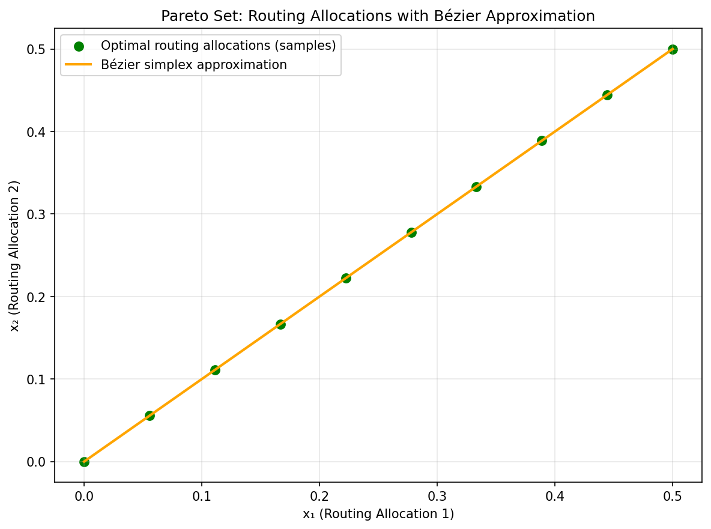
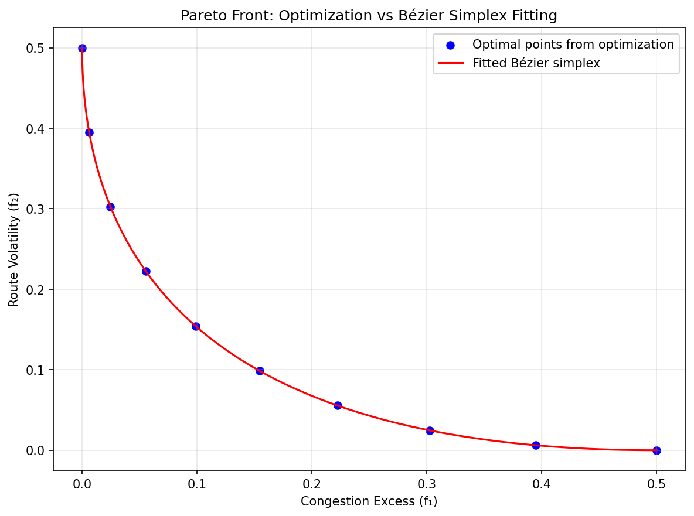
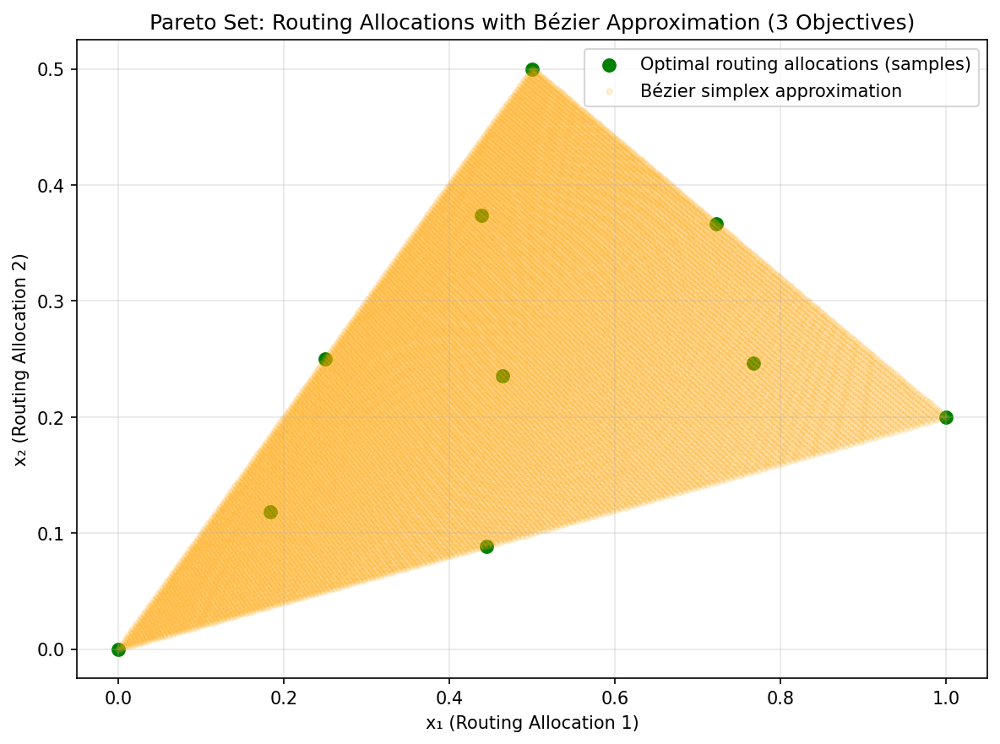
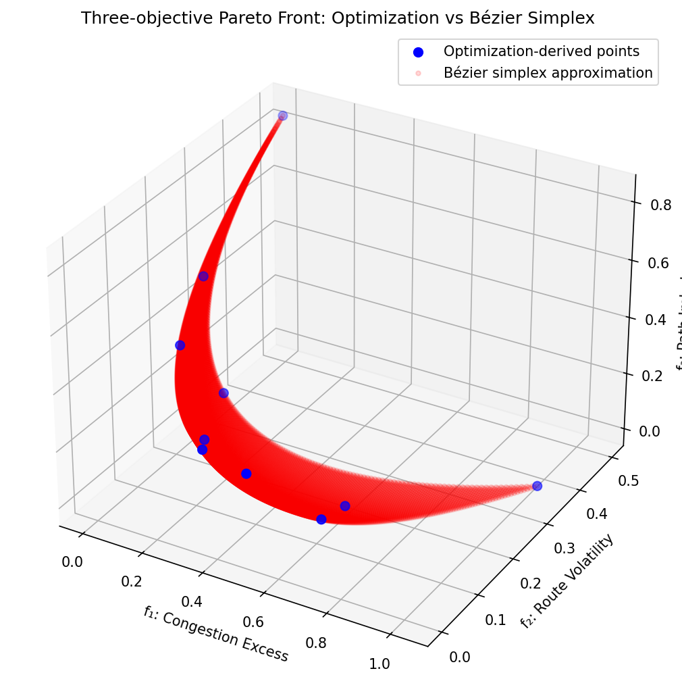

Communication Systems and Routing
In modern communication networks, backbone infrastructure must dynamically adjust routes to accommodate wildly fluctuating traffic demands from streaming services, cloud computing, and IoT devices. Traffic Engineering (TE) utilizing Model Predictive Control (MPC) resolves these complex allocations but faces competing demands: operators must route packets efficiently to strictly avoid bandwidth congestion, yet they must also suppress erratic, sudden changes to the routing policies to maintain overall network stability.
This routing challenge is frequently framed as a strongly convex multi-objective optimization problem over a predictive time horizon.
Where \(R(k)\) is the routing allocation matrix at time step \(k\), \(\zeta(k)\) represents the bandwidth excess above target capacity, and \(\Delta R(k)\) denotes the modifications applied to the traffic routing.
An input-change penalty gives positive curvature only in directions seen by the difference operator. With the previous route fixed and all initial changes included, that operator can have full column rank. Omitting the initial change leaves constant route sequences unpenalized. The scalarized problem’s curvature also depends on the chosen objective weights.
A Bézier surrogate can approximate decisions or objective values for a fixed network scenario using polynomial evaluation. Whether that reduces control latency enough is an empirical question. Feasibility of routes and capacity constraints must be assessed on predicted decisions; fitting a front alone does not provide a routing policy.
Numerical Experiments
To demonstrate the effectiveness of Bézier simplex fitting for approximating Pareto fronts in communication systems, we conducted an experiment using actual optimization to generate the Pareto front samples.
Problem Setup: We define a simplified routing optimization problem with two objectives: - Congestion Excess: \(f_1(x) = x_1^2 + x_2^2\) - Route Volatility: \(f_2(x) = (x_1 - 0.5)^2 + (x_2 - 0.5)^2\)
where \(x = (x_1, x_2)\) represents routing allocations. The weighted objective function \(f(x, w) = w_1 f_1(x) + w_2 f_2(x)\) is strongly convex.
Experiment Procedure: 1. Sample 10 weights \(w\) from \((1,0)\) to \((0,1)\). 2. For each \(w\), solve \(x^*(w) = \arg\min_x f(x, w)\) using L-BFGS optimization. 3. Collect the Pareto front points \((f_1(x^*(w)), f_2(x^*(w)))\). 4. Fit a degree-3 Bézier simplex to the weight-objective value pairs. 5. Visualize the fitted Bézier approximation against the optimization-derived Pareto front.
 |
 |
Pareto set. |
Pareto front. |


This experiment shows that Bézier simplex fitting can accurately approximate Pareto fronts derived from actual optimization, enabling real-time trade-off evaluation in communication network routing.
Three-Objective Extension
To demonstrate multi-objective scalability, we also consider a three-objective routing problem:
\(f_1(x) = x_1^2 + x_2^2\)
\(f_2(x) = (x_1 - 0.5)^2 + (x_2 - 0.5)^2\)
\(f_3(x) = 0.8\left((x_1 - 1.0)^2 + (x_2 - 0.2)^2\right)\)
The weighted objective \(f(x, w) = w_1 f_1(x) + w_2 f_2(x) + w_3 f_3(x)\) is strongly convex. We sampled 10 weight vectors on the 2-simplex, solved each weighted optimization with L-BFGS, and fitted a degree-3 Bézier simplex to the resulting objective triples.
 |
 |
Pareto set. |
Pareto front. |


The fit achieves nearly zero error at the sampled Pareto points. A cubic triangle has ten controls, equal to this example’s ten training rows, so training agreement alone is insufficient evidence of accuracy elsewhere.
The complete code for the two-objective and three-objective experiments is available in examples/generate_communication_pareto.py and examples/generate_communication_pareto_3obj.py, respectively.
Choose inputs and outputs from the intended use
The experiments use two continuous decision variables and squared distances to preferred allocations. They contain no flow-conservation equations, traffic matrix or link capacities. Their role is to demonstrate the weight-to-solution and weight-to-objective fitting workflow in a small quadratic problem. The interpretation as routing allocations does not add physical network constraints to that problem.
For two objectives the input is [w1, w2] on a segment. For three it is
[w1, w2, w3] on a triangle. The number of objectives determines this
priority-domain dimension; the number of routing decision variables
determines the decision output width. A front surrogate has one output
per objective. Keep these roles separate when adapting the example to a
larger network.
Why the toy targets are easy to fit
Both experiments have objectives of the form \(f_k(x)=c_k\|x-a_k\|^2\) with \(c_k>0\). Their optimizer is
In the two-objective example all \(c_k=1\), so the denominator equals one. The decision map is affine and its objective map is quadratic in the weights. A cubic can represent both. The third objective in the extension has \(c_3=0.8\); its denominator then varies, producing a rational map that the polynomial fit approximates.
This gives a useful independent validation target. Generate fresh weights, evaluate the closed-form optimizer, and compare every predicted decision and objective. Include triangle edges and vertices so that the three-way fit is checked against its two-way subproblems. Inspect the data matrix rank as well as training MSE when the row count equals the control count.
Extending to a network model
A reference routing problem should explicitly define feasible flow splits, the traffic scenario and how congestion is measured. Solve it at each training priority and preserve solver status with the data. On predicted routes, measure flow-conservation residuals, negative allocations, link overloads and route-change cost. A small objective-space residual can hide a constraint violation in the decision space.
If traffic volume varies independently over an interval, combine the
priority simplex with that interval. Three objectives and one traffic
parameter give type (2, 1), the prism in the
simploid overview. A fixed-traffic
priority triangle cannot represent a different traffic matrix simply by
changing its weights. Discrete route availability changes can require
separate models or explicit chart design.
Increase degree only after measuring interpolation error, and add samples near sharp changes in active capacity constraints. Use Explicit ensembles and active learning for acquiring informative reference solves and Visualization for inspecting residuals beyond one projected front.